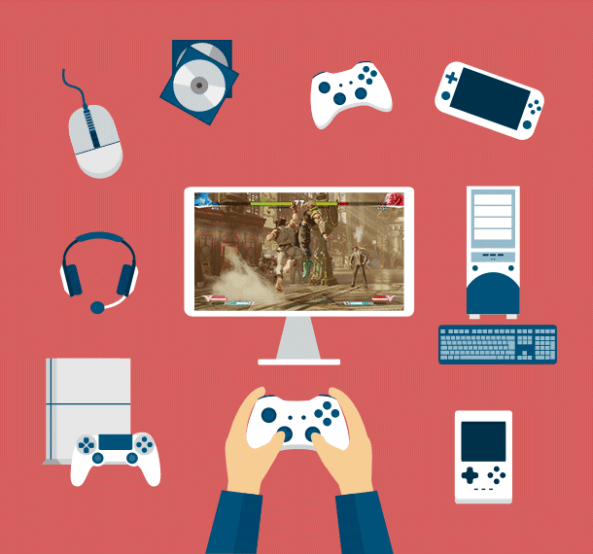

Un videojuego es un juego electrónico en el que una o más personas interactúan por medio de un controlador, con un dispositivo que muestra imágenes de vídeo. Este dispositivo electrónico, conocido genéricamente como "plataforma", puede ser una computadora, una máquina de arcade, una videoconsola o un dispositivo portátil, como por ejemplo un teléfono móvil, teléfono inteligente o tableta. La industria de los videojuegos es una de las principales en el mundo del arte y del entretenimiento.
Al dispositivo de entrada, usado para manipular un videojuego se le conoce como controlador o mando, y varía dependiendo de la plataforma. Por ejemplo, un controlador podría únicamente consistir de un botón y una palanca de mando o joystick, mientras otro podría presentar una docena de botones y una o más palancas, lo que llamamos mando. Los primeros juegos informáticos solían hacer uso de un teclado para llevar a cabo la interacción, o bien requerían que el usuario adquiriera un mando con un botón como mínimo. Muchos juegos de computadora modernos permiten o exigen que el usuario utilice un teclado y un ratón de forma simultánea.
Generalmente los videojuegos hacen uso de otras maneras, aparte de la imagen, de proveer la interactividad e información al jugador. El audio es casi universal, usándose dispositivos de reproducción de sonido, tales como altavoces y auriculares. Otro tipo de realimentación se hace a través de periféricos hápticos que producen vibración o retroalimentación de fuerza

Tipos de videojuegos
Actualmente los videojuegos ha avanzado tanto que hay tipos de ellos, estos son los videojuegos en linea (via internet) y los juegos fuera de linea (sin necesidad de internet), unas de las consolas de mejor uso y compra han sido varias, como "Playstation" que si bien es una de las marcas mas reconocidas, tambien ejecuta videojuegos tanto en linea, como fuera de linea, al igual que "Xbox" que a sido muy buen rival de "Playstation" por que las ventas son muchas de parte de ambas.
Videojuegos en linea
Los videojuegos en línea son aquellos videojuegos jugados vía Internet independientemente de la plataforma. Puede tratarse de videojuegos multijugador, en los que se juega con otras personas o videojuegos de navegador que se descargan desde la web y se ejecutan en el navegador
Videojujegos fuera de linea
Aquellos que no tienen acceso a Internet. Se juegan de forma individual o en grupos reducidos. Online: Aquellos que tienen funciones de red. Se pueden jugar en solitario y también existe la posibilidad de interactuar con muchas personas dentro de un mismo escenario